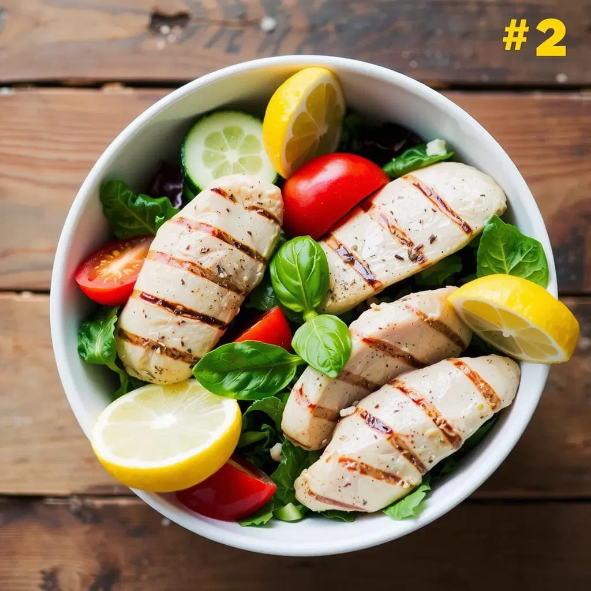
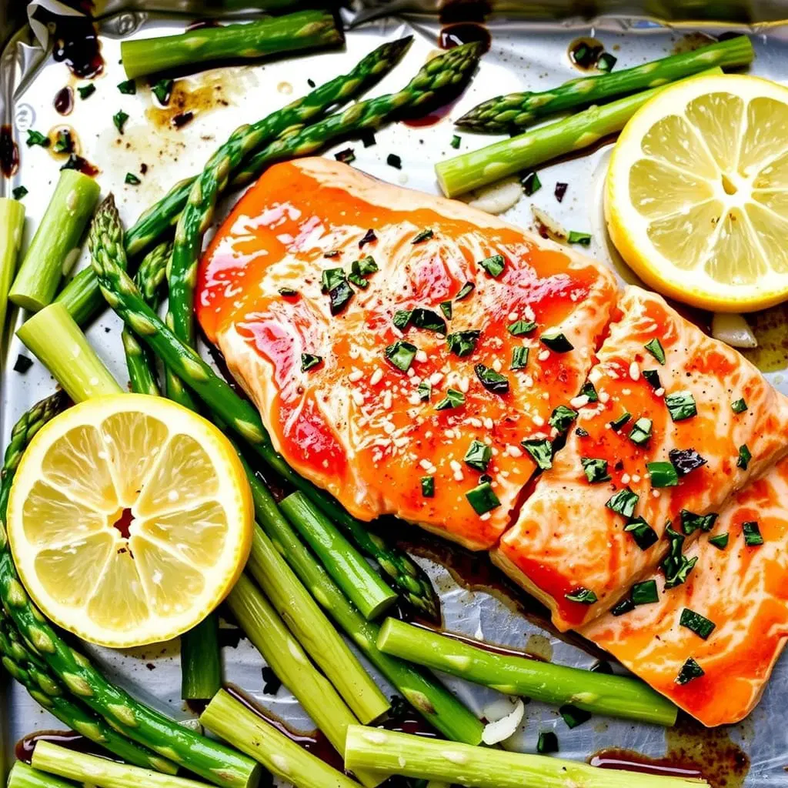
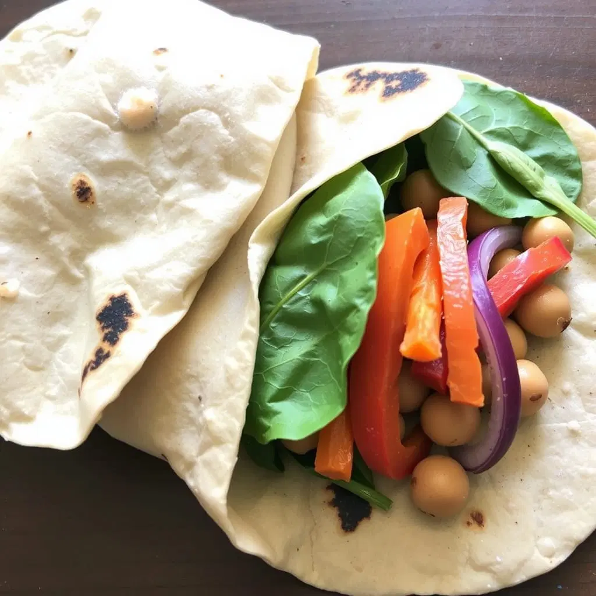
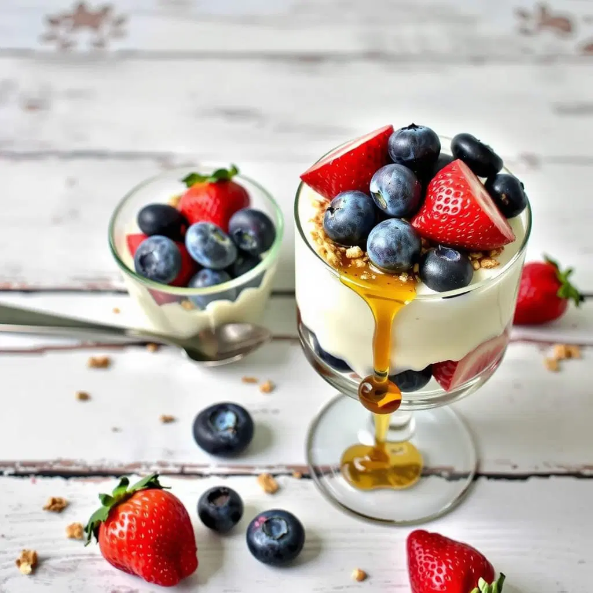

The Recipes
Each one ready in 30 minutes or less with simple, fresh ingredients

Grilled Lemon Herb Chicken Salad
Juicy chicken with fresh greens and a zesty lemon dressing.
View Recipe


Broiled Salmon with Garlic Asparagus
Omega-3 rich salmon with perfectly roasted asparagus.
View Recipe

